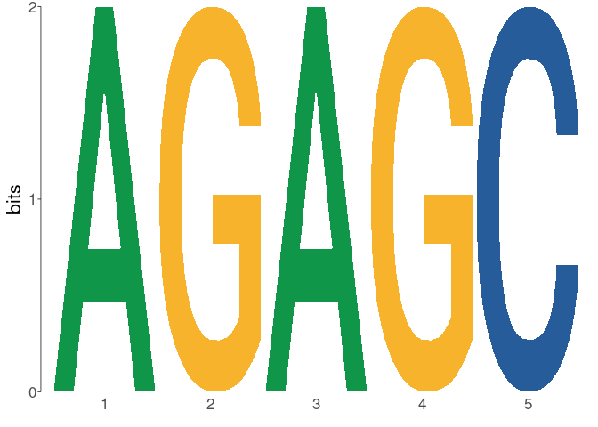

An R interface to the MEME Suite family of tools, which provides several utilities for performing motif analysis on DNA, RNA, and protein sequences. memes works by detecting a local install of the MEME suite, running the commands, then importing the results directly into R.
Installation
Development Version
You can install the development version of memes from GitHub with:
if (!requireNamespace("remotes", quietly=TRUE))
install.packages("remotes")
remotes::install_github("snystrom/memes")Docker Container
# Get development version from dockerhub
docker pull snystrom/memes_docker:devel
# the -v flag is used to mount an analysis directory,
# it can be excluded for demo purposes
docker run -e PASSWORD=<password> -p 8787:8787 -v <path>/<to>/<project>:/mnt/<project> snystrom/memes_docker:develDetecting the MEME Suite
memes relies on a local install of the MEME Suite. For installation instructions for the MEME suite, see the MEME Suite Installation Guide.
memes needs to know the location of the meme/bin/ directory on your local machine. You can tell memes the location of your MEME suite install in 4 ways. memes will always prefer the more specific definition if it is a valid path. Here they are ranked from most- to least-specific:
- Manually passing the install path to the
meme_pathargument of all memes functions - Setting the path using
options(meme_bin = "/path/to/meme/bin/")inside your R script - Setting
MEME_BIN=/path/to/meme/bin/in your.Renvironfile - memes will try the default MEME install location
~/meme/bin/
If memes fails to detect your install at the specified location, it will fall back to the next option.
To verify memes can detect your MEME install, use check_meme_install() which uses the search herirarchy above to find a valid MEME install. It will report whether any tools are missing, and print the path to MEME that it sees. This can be useful for troubleshooting issues with your install.
library(memes)
# Verify that memes detects your meme install
# (returns all green checks if so)
# (I have MEME installed to the default location)
check_meme_install()
#> checking main install
#> ✓ /opt/meme/bin
#> checking util installs
#> ✓ /opt/meme/bin/dreme
#> ✓ /opt/meme/bin/ame
#> ✓ /opt/meme/bin/fimo
#> ✓ /opt/meme/bin/tomtom
#> ✓ /opt/meme/bin/meme
# You can manually input a path to meme_path
# If no meme/bin is detected, will return a red X
check_meme_install(meme_path = 'bad/path')
#> checking main install
#> x bad/pathThe Core Tools
| Function Name | Use | Sequence Input | Motif Input | Output |
|---|---|---|---|---|
runDreme() |
Motif Discovery (short motifs) | Yes | No | data.frame w/ motifs column |
runAme() |
Motif Enrichment | Yes | Yes | data.frame (optional: sequences column) |
runFimo() |
Motif Scanning | Yes | Yes | GRanges of motif positions |
runTomTom() |
Motif Comparison | No | Yes | data.frame w/ best_match_motif and tomtom columns* |
runMeme() |
Motif Discovery (long motifs) | Yes | No | data.frame w/ motifs column |
* Note: if runTomTom() is run using the results of runDreme(), the results will be joined with the runDreme() results as extra columns. This allows easy comparison of de-novo discovered motifs with their matches.
Sequence Inputs can be any of:
- Path to a .fasta formatted file
-
Biostrings::XStringSet(can be generated from GRanges usingget_sequence()helper function) - A named list of
Biostrings::XStringSetobjects (generated byget_sequence())
Motif Inputs can be any of:
- A path to a .meme formatted file of motifs to scan against
- A
universalmotifobject, or list ofuniversalmotifobjects - A
runDreme()results object (this allows the results ofrunDreme()to pass directly torunTomTom()) - A combination of all of the above passed as a
list()(e.g.list("path/to/database.meme", "dreme_results" = dreme_res))
Output Types:
runDreme(), and runTomTom() return data.frames with special columns. The motif column contains universalmotif objects, with 1 entry per row. The remaining columns describe the properties of each returned motif. The following column names are special in that their values are used when running update_motifs to alter the properties of the motifs stored in the motif column. Be careful about changing these values.
- name
- altname
- family
- organism
- strand
- nsites
- bkgsites
- pval
- qval
- eval
memes is built around the universalmotif package which provides a framework for manipulating motifs in R. The motif columns from runDreme() and runTomTom() can be used natively with all universalmotif functions (eg universalmotif::view_motifs(dreme_results$motif)).
runTomTom() returns a special column: tomtom which is a data.frame of all match data for each input motif. This can be expanded out using tidyr::unnest(tomtom_results, "tomtom").
Quick Examples
Motif Discovery with DREME
suppressPackageStartupMessages(library(magrittr))
suppressPackageStartupMessages(library(GenomicRanges))
# Example transcription factor peaks as GRanges
data("example_peaks", package = "memes")
# Genome object
dm.genome <- BSgenome.Dmelanogaster.UCSC.dm6::BSgenome.Dmelanogaster.UCSC.dm6The get_sequence function takes a GRanges or GRangesList as input and returns the sequences as a BioStrings::XStringSet, or list of XStringSet objects, respectively. get_sequence will name each fasta entry by the genomic coordinates each sequence is from.
# Generate sequences from 200bp about the center of my peaks of interest
sequences <- example_peaks %>%
resize(200, "center") %>%
get_sequence(dm.genome)runDreme() accepts XStringSet or a path to a fasta file as input. You can use other sequences or shuffled input sequences as the control dataset.
# runDreme accepts all arguments that the commandline version of dreme accepts
# here I set e = 50 to detect motifs in the limited example peak list
# In a real analysis, e should typically be < 1
dreme_results <- runDreme(sequences, control = "shuffle", e = 50)memes is built around the universalmotif package. The motif column of the runDreme results object contains universalmotif objects which can be used natively in all universalmotif functions.
library(universalmotif)
#>
#> Attaching package: 'universalmotif'
#> The following object is masked from 'package:memes':
#>
#> update_motifs
view_motifs(dreme_results$motif)
Matching motifs using TOMTOM
Discovered motifs can be matched to known TF motifs using runTomTom(), which can accept as input a path to a .meme formatted file, a universalmotif list, or the results of runDreme().
TomTom uses a database of known motifs which can be passed to the database parameter as a path to a .meme format file, or a universalmotif object.
Optionally, you can set the environment variable MEME_DB in .Renviron, or the meme_db value in options to a valid .meme format file and memes will use that file as the database. memes will always prefer user input to the function call.
options(meme_db = system.file("extdata/flyFactorSurvey_cleaned.meme", package = "memes"))
m <- create_motif("CMATTACN", altname = "testMotif")
tomtom_results <- runTomTom(m)
tomtom_results
#> name altname family organism consensus alphabet strand icscore nsites
#> 1 motif testMotif <NA> <NA> CMATTACN DNA +- 13 NA
#> bkgsites pval qval eval best_match_name best_match_altname
#> 1 NA NA NA NA prd_FlyReg prd
#> best_match_motif
#> 1 <S4 class 'universalmotif' [package "universalmotif"] with 20 slots>
#> best_db_name best_match_offset best_match_pvalue best_match_evalue
#> 1 flyFactorSurvey_cleaned 0 7.12e-06 0.00407
#> best_match_qvalue best_match_strand
#> 1 0.00709 +
#> motif
#> 1 <S4 class 'universalmotif' [package "universalmotif"] with 20 slots>
#> tomtom
#> 1 prd_FlyReg, Ubx_FlyReg, Dr_SOLEXA, ftz_FlyReg, Hmx_SOLEXA, Dll_SOLEXA, BH1_SOLEXA, Exex_SOLEXA, Tup_Cell, Tup_SOLEXA, ovo_FlyReg, NK7.1_SOLEXA, Hmx_Cell, en_FlyReg, Bsh_Cell, tup_SOLEXA_10, CG34031_Cell, Exex_Cell, Dr_Cell, Unc4_Cell, CG11085_Cell, CG13424_SOLEXA, Abd-A_FlyReg, NK7.1_Cell, Dll_Cell, Dfd_FlyReg, CG13424_Cell, pho_FlyReg, CG32532_Cell, Odsh_Cell, Ftz_SOLEXA, Scr_SOLEXA, C15_Cell, CG15696_Cell, CG34031_SOLEXA, CG15696_SOLEXA, BH2_Cell, Bsh_SOLEXA, En_SOLEXA, Slou_SOLEXA, Slou_Cell, ap_FlyReg, Antp_SOLEXA, C15_SOLEXA, Zen2_SOLEXA, AbdA_SOLEXA, E5_SOLEXA, Awh_SOLEXA, Ems_SOLEXA, Lab_SOLEXA, Repo_SOLEXA, Unpg_SOLEXA, Ubx_Cell, Unpg_Cell, Ap_SOLEXA, Btn_SOLEXA, Pb_SOLEXA, Dfd_SOLEXA, Odsh_SOLEXA, Unc4_SOLEXA, BH2_SOLEXA, En_Cell, Hgtx_Cell, Ubx_SOLEXA, CG32532_SOLEXA, CG4136_SOLEXA, prd, Ubx, Dr, ftz, Hmx, Dll, B-H1, exex, tup, tup, ovo, NK7.1, Hmx, en, bsh, tup, CG34031, exex, Dr, unc-4, CG11085, lms, abd-A, NK7.1, Dll, Dfd, lms, pho, CG32532, OdsH, ftz, Scr, C15, CG15696, CG34031, CG15696, B-H2, bsh, en, slou, slou, ap, Antp, C15, zen2, abd-A, E5, Awh, ems, lab, repo, unpg, Ubx, unpg, ap, btn, pb, Dfd, OdsH, unc-4, B-H2, en, HGTX, Ubx, CG32532, CG4136, <S4 class 'universalmotif' [package "universalmotif"] with 20 slots>, <S4 class 'universalmotif' [package "universalmotif"] with 20 slots>, <S4 class 'universalmotif' [package "universalmotif"] with 20 slots>, <S4 class 'universalmotif' [package "universalmotif"] with 20 slots>, <S4 class 'universalmotif' [package "universalmotif"] with 20 slots>, <S4 class 'universalmotif' [package "universalmotif"] with 20 slots>, <S4 class 'universalmotif' [package "universalmotif"] with 20 slots>, <S4 class 'universalmotif' [package "universalmotif"] with 20 slots>, <S4 class 'universalmotif' [package "universalmotif"] with 20 slots>, <S4 class 'universalmotif' [package "universalmotif"] with 20 slots>, <S4 class 'universalmotif' [package "universalmotif"] with 20 slots>, <S4 class 'universalmotif' [package "universalmotif"] with 20 slots>, <S4 class 'universalmotif' [package "universalmotif"] with 20 slots>, <S4 class 'universalmotif' [package "universalmotif"] with 20 slots>, <S4 class 'universalmotif' [package "universalmotif"] with 20 slots>, <S4 class 'universalmotif' [package "universalmotif"] with 20 slots>, <S4 class 'universalmotif' [package "universalmotif"] with 20 slots>, <S4 class 'universalmotif' [package "universalmotif"] with 20 slots>, <S4 class 'universalmotif' [package "universalmotif"] with 20 slots>, <S4 class 'universalmotif' [package "universalmotif"] with 20 slots>, <S4 class 'universalmotif' [package "universalmotif"] with 20 slots>, <S4 class 'universalmotif' [package "universalmotif"] with 20 slots>, <S4 class 'universalmotif' [package "universalmotif"] with 20 slots>, <S4 class 'universalmotif' [package "universalmotif"] with 20 slots>, <S4 class 'universalmotif' [package "universalmotif"] with 20 slots>, <S4 class 'universalmotif' [package "universalmotif"] with 20 slots>, <S4 class 'universalmotif' [package "universalmotif"] with 20 slots>, <S4 class 'universalmotif' [package "universalmotif"] with 20 slots>, <S4 class 'universalmotif' [package "universalmotif"] with 20 slots>, <S4 class 'universalmotif' [package "universalmotif"] with 20 slots>, <S4 class 'universalmotif' [package "universalmotif"] with 20 slots>, <S4 class 'universalmotif' [package "universalmotif"] with 20 slots>, <S4 class 'universalmotif' [package "universalmotif"] with 20 slots>, <S4 class 'universalmotif' [package "universalmotif"] with 20 slots>, <S4 class 'universalmotif' [package "universalmotif"] with 20 slots>, <S4 class 'universalmotif' [package "universalmotif"] with 20 slots>, <S4 class 'universalmotif' [package "universalmotif"] with 20 slots>, <S4 class 'universalmotif' [package "universalmotif"] with 20 slots>, <S4 class 'universalmotif' [package "universalmotif"] with 20 slots>, <S4 class 'universalmotif' [package "universalmotif"] with 20 slots>, <S4 class 'universalmotif' [package "universalmotif"] with 20 slots>, <S4 class 'universalmotif' [package "universalmotif"] with 20 slots>, <S4 class 'universalmotif' [package "universalmotif"] with 20 slots>, <S4 class 'universalmotif' [package "universalmotif"] with 20 slots>, <S4 class 'universalmotif' [package "universalmotif"] with 20 slots>, <S4 class 'universalmotif' [package "universalmotif"] with 20 slots>, <S4 class 'universalmotif' [package "universalmotif"] with 20 slots>, <S4 class 'universalmotif' [package "universalmotif"] with 20 slots>, <S4 class 'universalmotif' [package "universalmotif"] with 20 slots>, <S4 class 'universalmotif' [package "universalmotif"] with 20 slots>, <S4 class 'universalmotif' [package "universalmotif"] with 20 slots>, <S4 class 'universalmotif' [package "universalmotif"] with 20 slots>, <S4 class 'universalmotif' [package "universalmotif"] with 20 slots>, <S4 class 'universalmotif' [package "universalmotif"] with 20 slots>, <S4 class 'universalmotif' [package "universalmotif"] with 20 slots>, <S4 class 'universalmotif' [package "universalmotif"] with 20 slots>, <S4 class 'universalmotif' [package "universalmotif"] with 20 slots>, <S4 class 'universalmotif' [package "universalmotif"] with 20 slots>, <S4 class 'universalmotif' [package "universalmotif"] with 20 slots>, <S4 class 'universalmotif' [package "universalmotif"] with 20 slots>, <S4 class 'universalmotif' [package "universalmotif"] with 20 slots>, <S4 class 'universalmotif' [package "universalmotif"] with 20 slots>, <S4 class 'universalmotif' [package "universalmotif"] with 20 slots>, <S4 class 'universalmotif' [package "universalmotif"] with 20 slots>, <S4 class 'universalmotif' [package "universalmotif"] with 20 slots>, <S4 class 'universalmotif' [package "universalmotif"] with 20 slots>, flyFactorSurvey_cleaned, flyFactorSurvey_cleaned, flyFactorSurvey_cleaned, flyFactorSurvey_cleaned, flyFactorSurvey_cleaned, flyFactorSurvey_cleaned, flyFactorSurvey_cleaned, flyFactorSurvey_cleaned, flyFactorSurvey_cleaned, flyFactorSurvey_cleaned, flyFactorSurvey_cleaned, flyFactorSurvey_cleaned, flyFactorSurvey_cleaned, flyFactorSurvey_cleaned, flyFactorSurvey_cleaned, flyFactorSurvey_cleaned, flyFactorSurvey_cleaned, flyFactorSurvey_cleaned, flyFactorSurvey_cleaned, flyFactorSurvey_cleaned, flyFactorSurvey_cleaned, flyFactorSurvey_cleaned, flyFactorSurvey_cleaned, flyFactorSurvey_cleaned, flyFactorSurvey_cleaned, flyFactorSurvey_cleaned, flyFactorSurvey_cleaned, flyFactorSurvey_cleaned, flyFactorSurvey_cleaned, flyFactorSurvey_cleaned, flyFactorSurvey_cleaned, flyFactorSurvey_cleaned, flyFactorSurvey_cleaned, flyFactorSurvey_cleaned, flyFactorSurvey_cleaned, flyFactorSurvey_cleaned, flyFactorSurvey_cleaned, flyFactorSurvey_cleaned, flyFactorSurvey_cleaned, flyFactorSurvey_cleaned, flyFactorSurvey_cleaned, flyFactorSurvey_cleaned, flyFactorSurvey_cleaned, flyFactorSurvey_cleaned, flyFactorSurvey_cleaned, flyFactorSurvey_cleaned, flyFactorSurvey_cleaned, flyFactorSurvey_cleaned, flyFactorSurvey_cleaned, flyFactorSurvey_cleaned, flyFactorSurvey_cleaned, flyFactorSurvey_cleaned, flyFactorSurvey_cleaned, flyFactorSurvey_cleaned, flyFactorSurvey_cleaned, flyFactorSurvey_cleaned, flyFactorSurvey_cleaned, flyFactorSurvey_cleaned, flyFactorSurvey_cleaned, flyFactorSurvey_cleaned, flyFactorSurvey_cleaned, flyFactorSurvey_cleaned, flyFactorSurvey_cleaned, flyFactorSurvey_cleaned, flyFactorSurvey_cleaned, flyFactorSurvey_cleaned, 0, 0, 0, 2, 0, 0, 0, 0, 0, 0, 0, 0, 0, 0, 1, 1, 0, 0, 3, 0, 1, 0, 1, 0, 0, 1, 0, 4, 0, 0, 0, 0, 0, 0, 0, 0, 1, 0, 0, 0, 0, 0, 0, 0, 0, 0, 0, 0, 0, 0, 0, 0, 0, 0, 0, 0, 0, 0, 0, 0, 0, 0, 0, 0, 0, 0, 7.12e-06, 4.12e-05, 0.00115, 0.00116, 0.00118, 0.00128, 0.00142, 0.00142, 0.00167, 0.00175, 0.00201, 0.00291, 0.00359, 0.00359, 0.00403, 0.00403, 0.00505, 0.00508, 0.00516, 0.00559, 0.00579, 0.0059, 0.00673, 0.00673, 0.00724, 0.00733, 0.00795, 0.00842, 0.00846, 0.00846, 0.00912, 0.00912, 0.00925, 0.00925, 0.00925, 0.00994, 0.0103, 0.0105, 0.0105, 0.0105, 0.0106, 0.0109, 0.0114, 0.0121, 0.0128, 0.013, 0.0136, 0.0145, 0.0145, 0.0145, 0.0145, 0.0145, 0.015, 0.015, 0.0154, 0.0154, 0.0154, 0.016, 0.016, 0.016, 0.017, 0.017, 0.017, 0.017, 0.0175, 0.0175, 0.00407, 0.0235, 0.656, 0.665, 0.674, 0.731, 0.808, 0.808, 0.951, 0.999, 1.15, 1.66, 2.05, 2.05, 2.3, 2.3, 2.88, 2.9, 2.95, 3.19, 3.31, 3.37, 3.84, 3.84, 4.14, 4.19, 4.54, 4.81, 4.83, 4.83, 5.21, 5.21, 5.28, 5.28, 5.28, 5.68, 5.91, 6, 6, 6, 6.08, 6.2, 6.5, 6.93, 7.3, 7.44, 7.77, 8.26, 8.26, 8.26, 8.26, 8.26, 8.54, 8.54, 8.79, 8.79, 8.79, 9.12, 9.12, 9.12, 9.73, 9.73, 9.73, 9.73, 9.98, 9.98, 0.00709, 0.0205, 0.174, 0.174, 0.174, 0.174, 0.174, 0.174, 0.174, 0.174, 0.182, 0.242, 0.251, 0.251, 0.251, 0.251, 0.251, 0.251, 0.251, 0.251, 0.251, 0.251, 0.251, 0.251, 0.251, 0.251, 0.251, 0.251, 0.251, 0.251, 0.251, 0.251, 0.251, 0.251, 0.251, 0.251, 0.251, 0.251, 0.251, 0.251, 0.251, 0.251, 0.258, 0.258, 0.258, 0.258, 0.258, 0.258, 0.258, 0.258, 0.258, 0.258, 0.258, 0.258, 0.258, 0.258, 0.258, 0.258, 0.258, 0.258, 0.258, 0.258, 0.258, 0.258, 0.258, 0.258, +, +, -, +, -, -, -, -, -, -, +, -, -, -, -, -, -, -, +, -, -, -, +, -, +, -, -, -, -, -, -, -, -, -, -, -, -, -, -, -, -, +, -, -, -, -, -, -, -, -, -, -, -, -, -, -, -, -, -, -, -, -, -, -, -, -Using runDreme results as TOMTOM input
runTomTom() will add its results as columns to a runDreme() results data.frame.
full_results <- dreme_results %>%
runTomTom()Motif Enrichment using AME
AME is used to test for enrichment of known motifs in target sequences. runAme() will use the MEME_DB entry in .Renviron or options(meme_db = "path/to/database.meme") as the motif database. Alternately, it will accept all valid inputs as runTomTom().
# here I set the evalue_report_threshold = 30 to detect motifs in the limited example sequences
# In a real analysis, evalue_report_threshold should be carefully selected
ame_results <- runAme(sequences, control = "shuffle", evalue_report_threshold = 30)
ame_results
#> # A tibble: 2 x 17
#> rank motif_db motif_id motif_alt_id consensus pvalue adj.pvalue evalue tests
#> <int> <chr> <chr> <chr> <chr> <dbl> <dbl> <dbl> <int>
#> 1 1 /usr/lo… Eip93F_… Eip93F ACWSCCRA… 5.14e-4 0.0339 19.3 67
#> 2 2 /usr/lo… Cf2-PB_… Cf2 CSSHNKDT… 1.57e-3 0.0415 23.7 27
#> # … with 8 more variables: fasta_max <dbl>, pos <int>, neg <int>,
#> # pwm_min <dbl>, tp <int>, tp_percent <dbl>, fp <int>, fp_percent <dbl>Visualizing Results
view_tomtom_hits allows comparing the input motifs to the top hits from TomTom. Manual inspection of these matches is important, as sometimes the top match is not always the correct assignment. Altering top_n allows you to show additional matches in descending order of their rank.
full_results %>%
view_tomtom_hits(top_n = 1) %>%
# Here I use the cowplot library simply to combine each plot into a 4-panel grid
cowplot::plot_grid(plotlist = .)
It can be useful to view the results from runAme() as a heatmap. ame_plot_heatmap() can create complex visualizations for analysis of enrichment between different region types (see vignettes for details). Here is a simple example heatmap.
ame_results %>%
ame_plot_heatmap()
Importing Data from previous runs
memes also supports importing results generated using the MEME suite outside of R (for example, running jobs on meme-suite.org, or running on the commandline).
| MEME Tool | Function Name | File Type |
|---|---|---|
| Dreme | importDremeXML() |
dreme.xml |
| TomTom | importTomTomXML() |
tomtom.xml |
| AME | importAme() |
ame.tsv* |
| FIMO | importFimo() |
fimo.tsv |
| Meme | importMeme() |
meme.txt |
* importAME() can also use the “sequences.tsv” output when AME used method = "fisher", this is optional.
FAQs
How do I use memes/MEME on Windows?
The MEME Suite does not currently support Windows, although it can be installed under Cygwin or the Windows Linux Subsytem (WSL). Please note that if MEME is installed on Cygwin or WSL, you must also run R inside Cygwin or WSL to use memes.
An alternative solution is to use Docker to run a virtual environment with the MEME Suite installed. We provide a memes docker container
that ships with the MEME Suite, R studio, and all memes dependencies pre-installed.
Citation
memes is a wrapper for a select few tools from the MEME Suite, which were developed by another group. In addition to citing memes, please cite the MEME Suite tools corresponding to the tools you use.
If you use runDreme() in your analysis, please cite:
Timothy L. Bailey, “DREME: Motif discovery in transcription factor ChIP-seq data”, Bioinformatics, 27(12):1653-1659, 2011. full text
If you use runTomTom() in your analysis, please cite:
Shobhit Gupta, JA Stamatoyannopolous, Timothy Bailey and William Stafford Noble, “Quantifying similarity between motifs”, Genome Biology, 8(2):R24, 2007. full text
If you use runAme() in your analysis, please cite:
Robert McLeay and Timothy L. Bailey, “Motif Enrichment Analysis: A unified framework and method evaluation”, BMC Bioinformatics, 11:165, 2010, doi:10.1186/1471-2105-11-165. full text
If you use runFimo() in your analysis, please cite:
Charles E. Grant, Timothy L. Bailey, and William Stafford Noble, “FIMO: Scanning for occurrences of a given motif”, Bioinformatics, 27(7):1017-1018, 2011. full text
Licensing Restrictions
The MEME Suite is free for non-profit use, but for-profit users should purchase a license. See the MEME Suite Copyright Page for details.